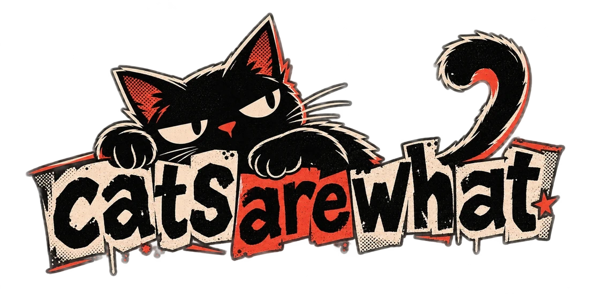
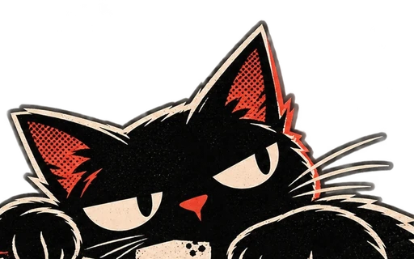

Now building · NID Design Project 02
A third-person stealth-action game with no gadgets, only a watch. Every special move comes from it, and each of its four powers works on one kind of thing:
Read the GDD →
I make the kind of games I'd lose sleep over: easy to pick up, suspiciously hard to put down. Marbles that shatter, phone calls you shouldn't answer, a whole life on a treadmill. If you catch yourself saying "okay, one more run", that's on me.
Five games, all playable in your browser. Open one to look under the hood: screenshots, the design in five cards, and the full game design document.
Now building · NID Design Project 02
A third-person stealth-action game with no gadgets, only a watch. Every special move comes from it, and each of its four powers works on one kind of thing:
Read the GDD →Teardowns of games I love, plus my art and 3D renders.

I've been a player far longer than I've been a designer, and that's the lens I design through. Every decision starts with one question: does this respect the person holding the controller? Their time, their skill, and their reason for picking the game up at all.
In practice that means a run that goes badly still moves you forward, builds give you real choices, the core action has to feel good before anything goes on top, and I check what players actually do: interviews, telemetry, playtests.
Need a game designer on your team, a fresh pair of eyes on your game, or someone to talk loot and raids with? Send an invite.